16 may 2008
SQLlite 
Application Designer / Domain Expert / Control Designer / Core Developer
Besides the special DataBase bricks, you can use the normal Grid to display tables, use the normal code editor to generate SQL code.
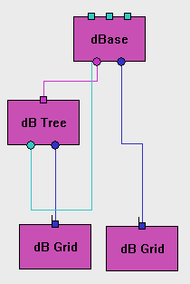 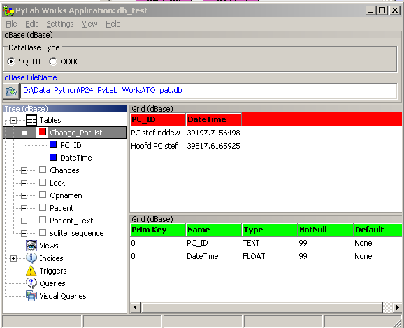
dBase
The database Brick has a buildin open database dialog, which can either connect to a SQLITE3 database or to an ODBC database ( MS-Access, Sybase, MySQL, etc.). For ODBC databases it will show both the system databases and the user databases.
The Brick has 2 outputs. The first output gives the metadata of the connected database ( tables, views, etc) and can for example be connected to a Tree or a DB_Tree brick. The second output gives the results of a query, in the general form of a grid, so you can connect it to a Grid or DB_Grid.
The Brick has 3 inputs, which are identical and except an SQL string that will be performed on the connected database. If the first input changes, only the SQL statement of the first input will be executed. If the first input didn't change, but the second input changed, the SQL statement of the second imput will executed and so on. For example you can connect the first input to the SQL output of a dB_Grid, the second input to a general text editor and the third to a visual SQL builder.
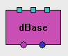 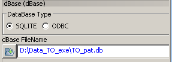
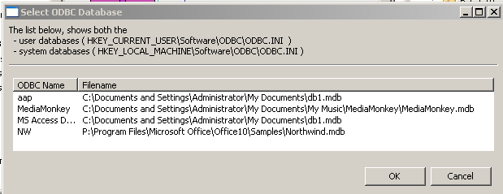
dB_Tree
The dB_Tree is a tree with some extra features, to handle the meta-data of a database.
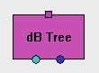 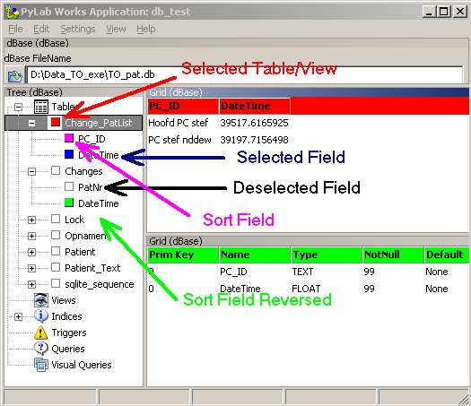
db_Grid
This is a normal gridd !!
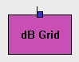 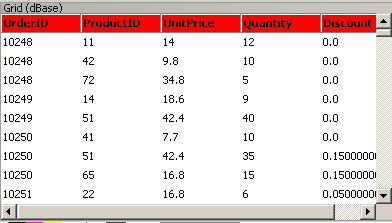
Background Information
User DSNs are stored in HKEY_CURRENT_USER\Software\ODBC\ODBC.INI.
see :
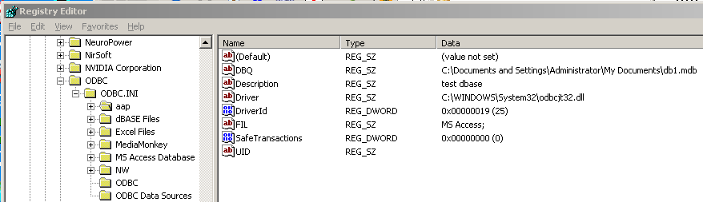
Manage ODBC
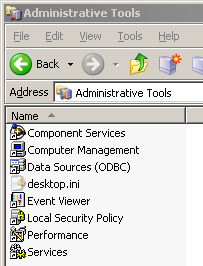
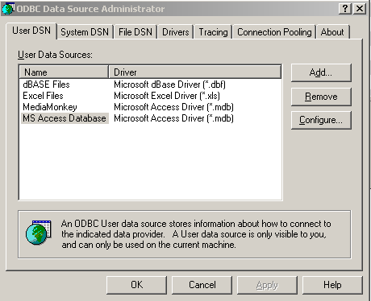
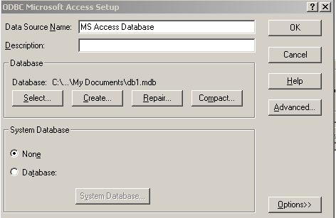
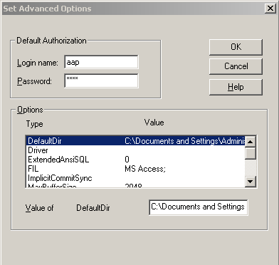
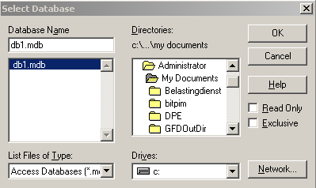
pyodbc is a Python module that allows you to access ODBC databases. It implements the Python Database API Specification v2.0.
Some notable features include:
* The library is free for commercial and personal use.
* It conforms to the DB API standard.
* No 3rd party libraries are required. Only native Python datatypes are used, such as decimal and datetime.
* It requires Python 2.4 or higher, since the decimal type was added in 2.4. (We are open to suggestions regarding versions for earlier Python builds.)
* Additional features have been added to simplify database programming with Python.
Mark J. Nenadov - HowTo Use ODBC with the Python DBI..
eGenix.com Products Python mxODBC - ODBC Database Interface for Python
ASPN Python Cookbook Odbc connection on win32
Python ODBC Stuff- Peter's Blog
PyODB is an ODBC Python module to provide an quick an easy way to work with databases. It provides a small set of simplified bindings to the unixODBC API and has been developed using SWIG.
Almost no activity, latest 2005
# Welcome to RealPyODBC
# Version 0.1 beta
# This class help you to connect your python script with ODBC engine.
# I need at least ctypes 0.9.2 for work.
# This class is not db-api 2.0 compatible. If you want to help me to do it
# please modify it and send me an e-mail with your work!
# All the comunity will thanks you.
# Please send bugs and reports to michele.petrazzo@unipex.it
# TO-DO
# Make compatibility with db-api 2.0, so add:
# apilevel, theadsafety, paramstyle, cursor, exceptions, ....
# This software if released with MIT Licence
Python ODBC - Summary [Savannah]
Python ODBC - Summary
This project is not part of the GNU Project.
Le objectivo de iste projecto es le realisation de un modulo ODBC pro Python, con licentia GPL, que es usabile in le major numero possibile de systemas operative.
Iste projecto es basate super le modulo ODBC que es parte del pacchetto win32all (que infortunatemente functiona solmente in Windows), ma jam actualmente illo functiona in Linux.
Pro utilisar iste modulo in Linux on necessita un installation functionante de unixODBC o de iODBC.
Registration Date: Sunday 11/23/2003 at 15:18 UTC
License: GNU General Public License v2 or later
Development Status: 2 - Pre-Alph
No activity since 2005
iODBC has been ported to numerous platforms, including:
Linux (x86, Itanium, Alpha, Mips, and StrongArm), Solaris (Sparc & x86), AIX, HP-UX (PA-RISC & Itanium), Digital UNIX, Dynix, Generic UNIX 5.4, FreeBSD, MacOS 9, MacOS X, DG-UX, and OpenVMS.
The unixODBC Project goals are to develop and promote unixODBC to be the definitive standard for ODBC on non MS Windows platforms. This is to include GUI support for both KDE and GNOME.